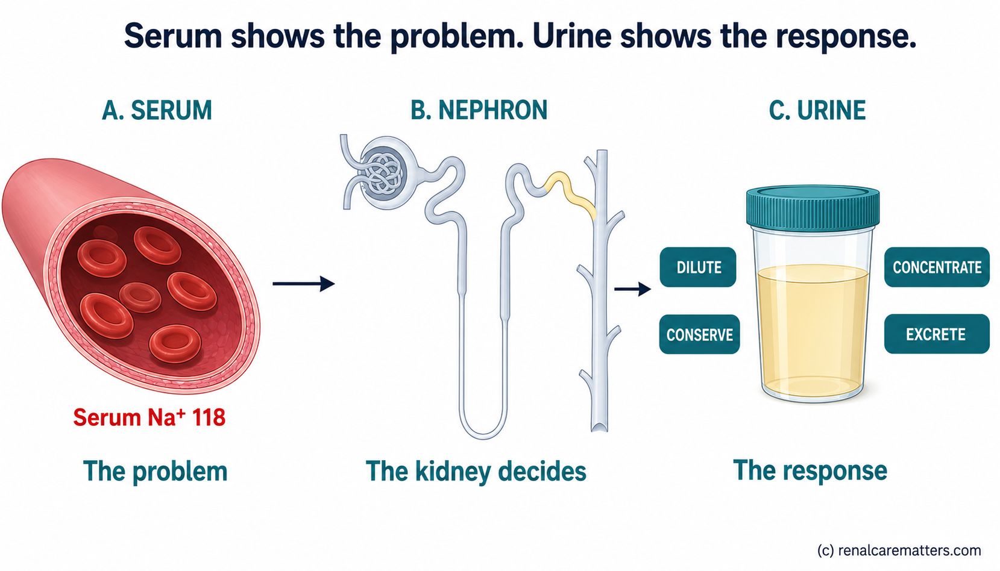
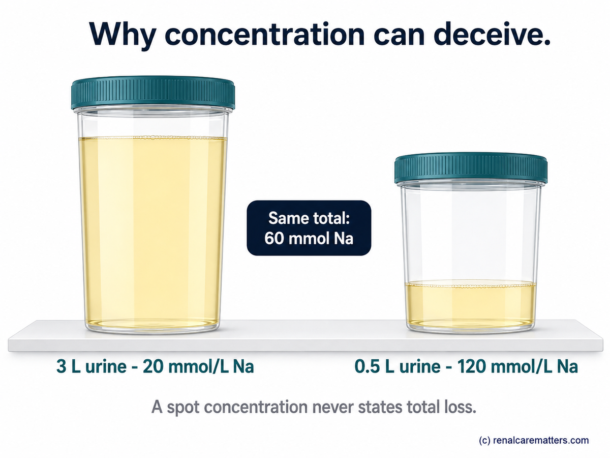
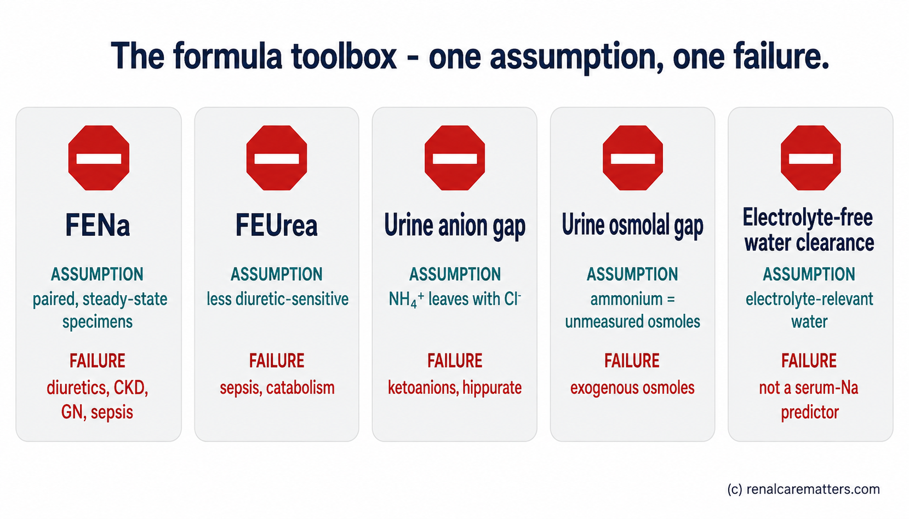
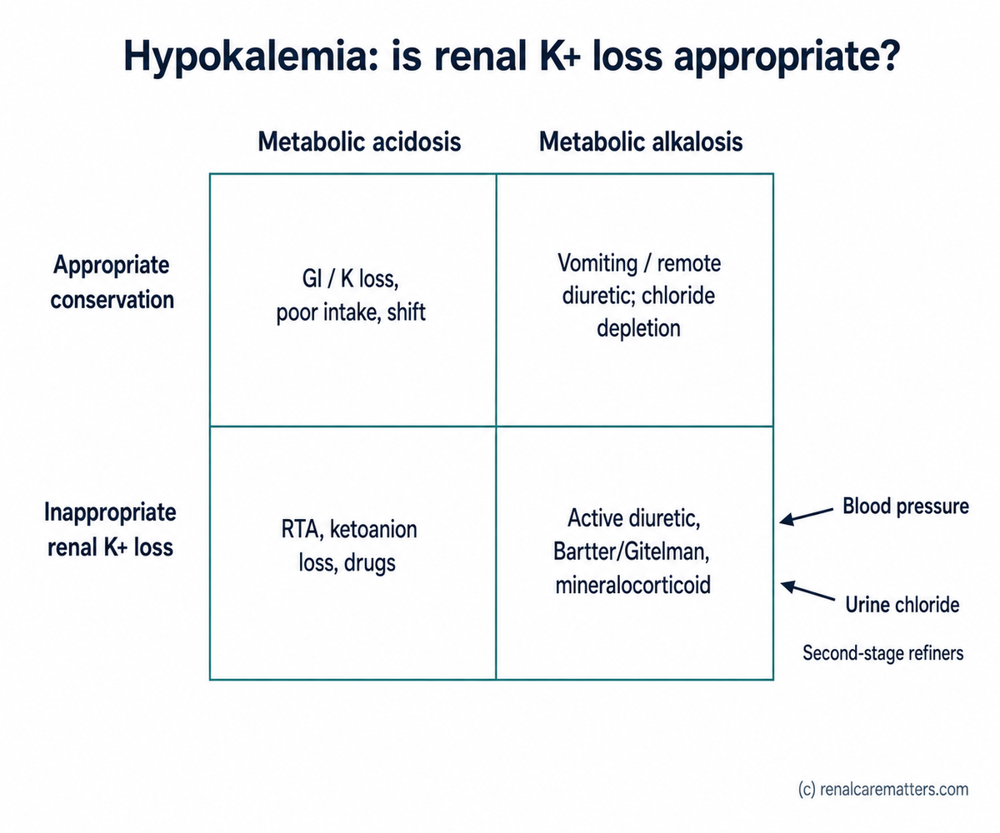

Serum values identify the problem. Urine values reveal the kidney's response. Urine electrolytes are not a blood test in another container and they are not a table of "normal values" — they are a snapshot of a regulated output. The useful question is never simply whether a urine sodium, chloride, or potassium is high or low, but whether that excretion is appropriate for the simultaneous serum abnormality, the effective arterial blood volume, water balance, kidney function, medications, and the timing of collection. This guide is for clinicians across emergency medicine, internal medicine, family medicine, pediatrics, surgery, obstetrics, intensive care, and nephrology.
Emergency care comes first — always
In severe symptomatic hyponatremia, hyperkalemia with electrocardiogram (ECG) changes, or shock, treatment takes priority. A pre-treatment urine sample is valuable but is never worth delaying hypertonic saline, calcium, or resuscitation. Where it is safe, draw serum and collect urine immediately before the first fluid, diuretic, or electrolyte dose — then treat. This guide is about interpretation and safe escalation; it is not a substitute for emergency correction.
The 5-Minute Bedside Path
Before the physiology, the bedside shortcut. This is the sequence that answers most urine-electrolyte questions in one pass; the modules that follow explain why each step is where it is, and where it breaks.
The one-line mental model
A urine electrolyte localizes physiology; it does not, by itself, name a disease. Concentrations, ratios, fractional excretions, and 24-hour excretion answer different questions — never let one stand in for another.
Urine Is a Regulated Output — Four Variables and Five Questions

The central image of the guide. The serum value states the problem; the nephron's handling — dilute, concentrate, conserve, or excrete — is what a urine electrolyte actually measures.
Four variables shape every urine electrolyte. Filtered load is plasma concentration multiplied by the glomerular filtration rate (GFR). Tubular handling is reabsorption and secretion along different nephron segments. Water handling sets the concentration and can make an identical solute excretion look "high" or "low." And time matters: a spot concentration is an instant, whereas 24-hour excretion is a balance estimate. The same 60 mmol of sodium can present as 20 mmol/L in 3 L of urine or 120 mmol/L in 0.5 L — neither concentration alone states the total sodium loss.
Every interpretation then follows five questions: (1) What is the serum problem? (2) What should a healthy kidney be doing? (3) What is the urine actually doing, on a contemporaneous spot pattern? (4) What could distort the signal? (5) Does the result change management? Hold these five in mind through every module below.
The Sodium Pointed One Way; the Chloride Unlocked the Mechanism
A 3-year-old boy developed recurrent hyponatremic seizures after profuse sweating. Before resuscitation, his biochemistry showed serum sodium 118 mmol/L, chloride 68 mmol/L, measured serum osmolality 268 mOsm/kg, urine osmolality 375 mOsm/kg, urine sodium 34 mmol/L, urine potassium 82 mmol/L, a fractional excretion of sodium (FENa) of 0.8%, and — critically — a urine chloride below 15 mmol/L. The pattern initially resembled a salt-wasting tubulopathy. The very low urine chloride showed instead that the kidney was avidly conserving chloride, redirecting the search toward extrarenal loss. Sweat chloride was 120 mmol/L and cystic fibrosis transmembrane conductance regulator (CFTR) variants confirmed cystic fibrosis presenting as a pseudo-Bartter syndrome.1
Five lessons anchor the rest of the guide: a single urine sodium can mislead when read alone; a low urine chloride can demonstrate appropriate renal conservation despite an apparently non-low urine sodium; the sample taken before resuscitation preserved the diagnostic signal; urine electrolytes localize physiology rather than name a disease; and in a hot climate, sweat-related salt loss deserves deliberate attention — including in children without a previously recognized phenotype. We return to this case after each core analyte.
Return to the case — after urine osmolality
Return to the case — after sodium and chloride
Return to the case — after potassium and fractional excretion
Read the Specimen Before You Read the Number
Most urine-electrolyte errors are pre-analytic, not interpretive. Before ordering or interpreting, work the checklist: draw serum and collect urine as close together as feasible; in an unstable patient never delay emergency treatment, and collect immediately before therapy only if it is safe; record IV fluids, diuretics, sodium–glucose cotransporter-2 (SGLT2) inhibitors, mannitol, contrast, bicarbonate, steroids, vasopressin-active drugs, vomiting, diarrhea, enteral feeds, and time since the last dose; record urine output and the collection interval; check the creatinine trend and whether urine flow is changing rapidly; ask the laboratory whether urine osmolality is measured or estimated, because a calculated value must not replace a measured one for diagnostic reasoning; confirm units (for sodium, potassium, and chloride, mmol/L equals mEq/L for these monovalent ions); and avoid samples from a bag contaminated by irrigation or other fluids.
Critical sampling rule
A urine sample drawn after saline or a diuretic but interpreted as baseline is the single most common way to convert a good test into a misleading one. If you cannot sample before therapy, say so in the note and interpret accordingly.
Choose the right measurement format
| Clinical question | Preferred measurement | Why |
|---|---|---|
| Is ADH effect present? | Spot measured urine osmolality | Direct functional readout of urine concentration |
| Is the kidney conserving Na / Cl now? | Paired spot urine Na and Cl | Rapid snapshot; best before fluids or diuretics |
| Is renal potassium loss inappropriate? | Spot urine K/creatinine + acid–base & BP context; timed urine if uncertain | Partly corrects for water concentration |
| Is Na intake / excretion being estimated? | Valid 24-hour urine Na with a creatinine-adequacy check | A spot concentration is not daily intake |
| Is stone risk being quantified? | 24-hour urine volume and solutes | Risk depends on daily excretion and supersaturation |
| Is AKI "prerenal"? | No single urine test — integrate sediment, hemodynamics, exposures, imaging, selective indices | FENa and FEUrea (fractional excretion of urea) are phenotype clues, not etiologic verdicts |

Why concentration can deceive. Identical total sodium excretion (60 mmol) reads as 20 mmol/L or 120 mmol/L depending only on urine volume. A spot concentration never states total loss.
Urine Osmolality — First Ask What the Kidney Is Doing With Water
In hypotonic hyponatremia, teach and read measured urine osmolality before urine sodium. It is the direct readout of renal water handling. Interpretive anchors, all approximate: at or below roughly 100 mOsm/kg the kidney is near-maximally excreting water — consider primary polydipsia or low-solute intake; above roughly 100 mOsm/kg a vasopressin effect or impaired dilution is present, and you proceed to urine sodium and chloride with the clinical context; a very high urine osmolality does not automatically mean dehydration — it can reflect glucosuria, urea, mannitol, or contrast.
Distinguish osmolality (particles per kilogram of water) from specific gravity (density, which is affected by particle size). Dipstick specific gravity cannot substitute reliably when glucose, protein, or radiocontrast is present. Guideline-supported The diagnostic priority of urine osmolality and spot urine sodium in hypotonic hyponatremia follows the European Society of Endocrinology (ESE) hyponatraemia guideline.2
Urine Sodium — Effective Circulation, Distal Delivery, and Recent Treatment
Urine sodium reflects the interaction of effective arterial blood volume (EABV), GFR, neurohormonal tone, dietary intake, tubular function, and drugs. The most useful single pattern: in hypotonic hyponatremia with urine osmolality above 100 mOsm/kg, a urine sodium at or below approximately 30 mmol/L supports a low effective arterial volume, whereas a higher value may support the syndrome of inappropriate antidiuresis (SIAD), renal salt loss, adrenal insufficiency, or diuretic effect — but never in isolation.2
Failure modes are common and must be excluded before you trust the number: recent diuretic administration; CKD with impaired sodium conservation; bicarbonaturia or other non-chloride sodium salts; osmotic diuresis; adrenal insufficiency or mineralocorticoid deficiency; recent saline infusion; low dietary sodium; and edema disorders in which total body sodium is high but effective arterial volume is low. Expert-practice threshold The 30 mmol/L cutoff is a decision aid in a defined context, not a biological border.
Urine Chloride — the Underused Locator of Chloride Balance
Chloride often tracks the kidney's response to chloride depletion more faithfully than sodium — especially when urinary sodium is being excreted alongside bicarbonate or another non-chloride anion. This is the analyte the opening case turned on, and it is the one most clinicians under-order — its classic low-chloride settings are vomiting, nasogastric (NG) suction, and sweat loss.
![Two-pathway clinical diagram titled Urine chloride unlocks the site of loss. Left pathway, low urine chloride below about 15 to 20 millimoles per litre: the kidney is conserving chloride, so look outside the kidney (vomiting, nasogastric suction, sweat loss, chloride-deficient intake, post-diuretic phase). Right pathway, high urine chloride above about 20: ongoing renal loss or a chloride-resistant mechanism, so look at active diuretics, tubulopathies, and blood pressure or aldosterone. A shaded gray-zone band spans the threshold rather than a hard wall.](../images/unlocking-urine-electrolytes-clinician-04-urine-chloride-locator.webp)
Urine chloride as a locator. Low chloride points outside the kidney; high chloride points to ongoing renal loss or a chloride-resistant mechanism. The threshold is a gray band, not a wall.
- NG
- Nasogastric
Pattern anchors, not absolutes: a urine chloride below about 15–20 mmol/L suggests avid renal chloride conservation and therefore recent or ongoing extrarenal chloride loss, low chloride intake, or a post-diuretic phase — typically vomiting, nasogastric (NG) suction, sweat loss, or chloride-depletion alkalosis. A urine chloride above about 20 mmol/L in a steady clinical state suggests renal chloride wasting or a chloride-resistant mechanism — active diuretic effect, Bartter or Gitelman syndromes, mineralocorticoid excess in metabolic alkalosis, or severe tubular dysfunction.3
High-value Na–Cl discordance
A urine sodium that is higher than expected with a very low urine chloride can occur when sodium is being excreted with bicarbonate — as in recent vomiting with bicarbonaturia. In the opening case, a low urine chloride demonstrated renal conservation during sweat chloride loss even though urine sodium was 34 mmol/L. When Na and Cl disagree, the chloride usually tells the truer story about chloride balance.
Urine Potassium — Is the Kidney Conserving Appropriately?
Interpret urine potassium only after defining six things: serum potassium direction, acid–base state, blood pressure and effective arterial volume, magnesium status, diuretic or laxative exposure, and urine concentration and kidney function. A spot urine potassium concentration is a rapid screen but is highly flow-dependent. A spot urine potassium-to-creatinine ratio partially corrects for water concentration: during hypokalemia, a value above roughly 13 mmol/g creatinine (about 1.5 mmol/mmol) is commonly used to support renal potassium loss — but thresholds vary and must be confirmed against the laboratory's units and the clinical setting. A 24-hour urine potassium above roughly 15–30 mmol/day during hypokalemia likewise suggests inappropriate renal loss, subject to collection quality and intake.4
Older tool — and why it fails: the transtubular potassium gradient (TTKG)
Do not center potassium interpretation on the transtubular potassium gradient (TTKG). Its assumptions — adequate distal sodium delivery, urine osmolality at least equal to serum osmolality, and predictable medullary urea handling — often fail, and it should sit in an "older tools" box rather than the primary algorithm.4 Prefer the potassium-to-creatinine ratio with acid–base and blood-pressure context.
Add magnesium to the potassium work-up
Urea, Creatinine, and Fractional Excretion — Powerful, and Easy to Misuse
Urine creatinine is a convenient concentration denominator, but not a perfect one — creatinine generation varies with muscle mass, age, diet, and illness, and a very low or changing GFR weakens every fractional index. Two formulas dominate the bedside.
These are phenotype clues, not universal prerenal-versus-acute-tubular-necrosis (ATN) rules. A low FENa can occur in glomerulonephritis, pigment nephropathy, contrast-associated AKI, early obstruction, and sepsis; a higher FENa can occur after diuretics, in CKD, or after resuscitation. A systematic review and meta-analysis of FENa for differentiating AKI causes shows where it performs better and where CKD and diuretics erode its usefulness.5 Diagnostic-performance evidence
Do not calculate — or do not trust — when…
A fractional index is unreliable and often should not be computed at all when the specimens are non-simultaneous, when a diuretic or saline was given before the sample, in CKD, in rapidly changing (non-steady-state) kidney function, or with glucosuria, bicarbonaturia, or mannitol. Urine microscopy, the clinical trajectory, hemodynamics, a medication and exposure review, and obstruction assessment usually carry more etiologic information than any single fractional index.

The formula toolbox with stop signs. Each index carries one dominant assumption and one common failure — the failure is the part clinicians forget.
- FENa
- Fractional excretion of sodium
- FEUrea
- Fractional excretion of urea
Hyponatremia — Tonicity → Urine Water Response → Solute Pattern
The sequence: assess symptoms and the emergency need for hypertonic saline; confirm hypotonicity with a measured serum osmolality, accounting for glucose and other effective osmoles; measure urine osmolality. If urine osmolality is approximately ≤100 mOsm/kg, investigate water and solute intake. If it is above 100 mOsm/kg, interpret paired urine sodium and chloride together with effective arterial volume, medications, cortisol and thyroid assessment when indicated, and kidney function. Under diuretic exposure, do not call SIAD from urine sodium alone — reassess timing, and consider serum uric acid and the fractional excretion of urate as specialist-level adjuncts.2
| Typical pattern | Urine osmolality | Urine Na | Key modifier |
|---|---|---|---|
| Low-solute intake / primary polydipsia | ≤ ~100 | variable | Water & solute intake history |
| Hypovolemia | > 100 | ≤ ~30 | Low EABV; urine Cl usually low too |
| Heart failure / cirrhosis | > 100 | ≤ ~30 | High total-body Na, low EABV |
| SIAD pattern | > 100 | > ~30 | Euvolemic, after excluding adrenal/thyroid/diuretic |
| Adrenal insufficiency | > 100 | > ~30 | Cortisol; can mimic SIAD |
| Diuretic effect | variable | often > 30 | Timing since dose; urine Cl may be high |
| Renal salt wasting | > 100 | high | Diagnosis of exclusion; needs longitudinal response |
Read every row as a typical pattern, never a diagnostic one.

The hyponatremia pathway — tonicity, then urine osmolality, then paired Na/Cl with modifiers. The emergency-treatment banner is kept visually separate from the etiologic work-up on purpose.
Hypernatremia and Polyuria — Can the Kidney Conserve Water?
Start with urine volume and urine osmolality. Hypernatremia with a low urine osmolality suggests impaired vasopressin effect or a severe concentrating defect; appropriately concentrated urine redirects attention to extrarenal water loss or inadequate access to water. In polyuria, separate a water diuresis from an osmotic diuresis using measured urine osmolality and, when needed, daily osmole excretion.
Hypokalemia — Renal Versus Extrarenal, Then Mechanism
Define first whether the renal potassium response is appropriate (conservation) or inappropriate (ongoing renal loss), using the spot urine potassium-to-creatinine ratio; then cross it with the acid–base state. Blood pressure and urine chloride are the second-stage refiners, and magnesium is checked because refractory hypokalemia may persist until it is replaced.4
| Renal K response | Acid–base state | Main directions |
|---|---|---|
| Appropriate conservation | Metabolic acidosis | GI bicarbonate/K loss, poor intake, transcellular shift (context-dependent) |
| Inappropriate renal K loss | Metabolic acidosis | Renal tubular acidosis (RTA), ketoanion-related loss, drugs |
| Appropriate conservation | Metabolic alkalosis | Vomiting / remote diuretic, chloride depletion; urine Cl refines the mechanism |
| Inappropriate renal K loss | Metabolic alkalosis | Active diuretic, Bartter/Gitelman, mineralocorticoid states; use BP and urine Cl |

The hypokalemia matrix — renal conservation versus wasting crossed with acidosis versus alkalosis, with blood pressure and urine chloride as the second-stage refiners.
Hyperkalemia — Urinary Indices Are Secondary, Not Emergency Tools
Lead with the ECG; repeat or confirm when pseudohyperkalemia is possible; stop sources; and treat urgently when indicated. Urine potassium may help later in unexplained persistent hyperkalemia, but a low excretion can reflect low GFR, low distal sodium and water delivery, hypoaldosteronism, or collecting-duct resistance. Do not use the TTKG as the decisive bedside test.
Metabolic Alkalosis — Urine Chloride as the Branch Point
After confirming the disorder and assessing severity, branch on urine chloride. A low urine chloride indicates chloride-depletion physiology — vomiting, gastric suction, remote diuretics, post-hypercapnia, sweat loss, or chloride-deficient intake. A high urine chloride indicates active renal chloride loss or a chloride-resistant mechanism — active diuretics, Bartter or Gitelman syndromes, hypomagnesemia, severe potassium depletion, or mineralocorticoid excess; add blood pressure and renin/aldosterone to this branch. Prefer "chloride-responsive pattern" and "chloride-resistant pattern" to the older volume-responsive terminology, while remembering that response to saline is a therapeutic observation, not a risk-free diagnostic test.3
Normal-Anion-Gap Metabolic Acidosis — Estimate Ammonium Carefully
AKI and Oliguria — Phenotype, Not Verdict
Build the AKI panel around urinalysis and sediment, the urine-output trend, hemodynamics and congestion, a drug/toxin/sepsis/obstruction assessment, and point-of-care ultrasound (POCUS) when trained and available. Add paired serum and urine electrolytes only when the result will answer a defined question. Established AKI evaluation follows the KDIGO (Kidney Disease: Improving Global Outcomes) 2012 framework.6
Do not let a fractional index name the disease
Do not label AKI "prerenal" solely because FENa is below 1%, and do not diagnose ATN solely because it is above 2%. These indices are phenotype clues that must be integrated with sediment, trajectory, hemodynamics, and exposures.
The March 2026 KDIGO acute kidney injury / acute kidney disease (AKD) document is cited here only as a public-review draft, not an operative guideline, until it is finalized.7
Edema States, Diuretic Response, and Selected Tubulopathies
Separate total-body sodium excess from a low effective arterial volume. In acute decompensated heart failure, a post-diuretic spot urine sodium can be used in protocolized settings to assess natriuretic response — but those thresholds and timing belong to a dedicated heart-failure protocol, not the general diagnostic cutoffs in this guide. Never mix a pre-treatment diagnostic urine sodium with post-dose response monitoring.
For the tubulopathies, keep the workup pattern-based and refer early: Bartter versus Gitelman patterns turn on urine chloride, potassium wasting, magnesium, urine calcium, blood pressure, and medication exclusion — and the KDIGO Gitelman consensus notes that spot urine is sufficient in many diagnostic contexts.8 RTA needs urine pH plus ammonium assessment; urine pH alone is insufficient. Nephrolithiasis needs a 24-hour panel (volume, calcium, citrate, oxalate, uric acid, sodium, pH). Fanconi syndrome shows glycosuria without matching hyperglycemia, phosphaturia, uricosuria, aminoaciduria, and proximal bicarbonate loss. Cerebral and renal salt wasting versus SIAD is a longitudinal, response-based distinction, not a single-urine-sodium call.
Minimum Viable Urine-Electrolyte Bundles
| Scenario | Minimum useful initial bundle |
|---|---|
| Hypotonic hyponatremia | Paired serum osmolality / Na / glucose / urea; measured urine osmolality, urine Na and Cl; add urine K when computing electrolyte-free water handling or when a K disorder coexists |
| Hypokalemia | Serum bicarbonate or blood gas, Mg, creatinine; spot urine K and creatinine; urine Cl when alkalosis is present |
| Metabolic alkalosis | Spot urine Cl, Na, K and creatinine; medication history; Mg; BP; renin/aldosterone only after correcting confounders when indicated |
| Normal-gap metabolic acidosis | Urine Na, K, Cl, pH; measured urine osmolality plus urine urea/glucose if the UOG is needed; direct urine ammonium if available |
| AKI / oliguria | Urinalysis with sediment, urine output, serum chemistry; selective paired urine Na/urea/creatinine only if a specific question remains |
| Polyuria / hypernatremia | Timed urine volume, measured urine osmolality, paired serum osmolality/Na; urine Na/K and glucose/urea when the mechanism is unclear |
Results That Should Make You Pause
| If you see… | Pause, because… |
|---|---|
| Urine electrolytes drawn after saline or diuretic, read as baseline | The kidney's response was already altered by therapy |
| Urine Na and Cl without urine osmolality in hyponatremia | You skipped the primary readout of water handling |
| Spot urine K without creatinine or urine volume | Flow dependence makes the bare concentration uninterpretable |
| FENa from non-simultaneous specimens | The ratio assumes paired sampling |
| UAG used in ketoacidosis or toxin exposure | Ammonium is excreted with non-chloride anions |
| Urine pH > 5.5 called distal RTA during a urease-producing urinary tract infection (UTI) | Urea-splitting organisms raise urine pH independently |
| A low urine sodium used to exclude intrinsic kidney disease | Low FENa/Na occurs in GN, pigment, contrast, sepsis, early obstruction |
| A high urine sodium used to diagnose SIAD | Diuretics, adrenal insufficiency, kidney failure, and post-treatment low EABV were not excluded |
| A 24-hour collection accepted without an adequacy check | Under- or over-collection invalidates daily-excretion claims |
Calculator Workbench — Teaching Aids With Guardrails
Every calculator here shows its formula, labels its units, and refuses to output a disease label. Three of the interpretive tools this guide relies on are proposed new builds (marked below); the rest already exist in the library.
Predict the Kidney's Response, Then Reveal
For each vignette, predict the urine pattern before opening the reveal.
1 · Hyponatremia after diarrhea
2 · Vomiting with metabolic alkalosis
3 · Thiazide-associated hyponatremia
4 · SIAD pattern
5 · Heart failure
6 · Hypokalemia with hypertension
7 · Diarrhea versus RTA
8 · Oliguric AKI after sepsis and diuretics
9 · Polyuria with glucosuria
10 · The opening CFTR case

The case resolved. The full pattern — not any single value — changed the diagnosis and the prevention plan.
- RAAS
- Renin–angiotensin–aldosterone system
- CFTR
- Cystic fibrosis transmembrane conductance regulator
Resource-Aware Interpretation
Use SI units (mmol/L, mOsm/kg, μmol/L) with mg/dL conversions where clinically common. Measured urine osmolality, direct urine ammonium, and complete 24-hour stone panels may not be available in every hospital — a resource-limited pathway leans on paired urine Na/K/Cl plus serum chemistry and careful timing, treating urine specific gravity only as a rough screen and never manufacturing a calculated osmolality and calling it measured. Take histories that ask specifically about heat exposure, heavy outdoor work, fever, gastroenteritis, burns, high-output stomas, NG suction, and tropical infection-related volume loss. Do not overgeneralize cystic fibrosis prevalence from Western cohorts — the opening case illustrates a mechanism and a diagnostic possibility, not an epidemiologic claim. Communicate directly with the local laboratory about assay availability, units, turnaround, sample type, and add-on feasibility. Neonates, pregnancy, cirrhosis, advanced heart failure, and advanced CKD all need modified interpretation and a lower threshold for specialist input.
Referral and Escalation Triggers
Recommend urgent specialist or higher-level evaluation for: severe symptomatic dysnatremia, seizures, coma, or rapidly changing sodium; severe or refractory potassium disorder or ECG changes; suspected toxic ingestion; oliguria or anuria, rapidly rising creatinine, or suspected obstruction; persistent alkalosis or acidosis without a clear reversible cause; suspected inherited tubulopathy, RTA, or salt-wasting disorder; recurrent unexplained electrolyte crises; and discordant urine indices that remain unexplained after treatment and medication timing are reviewed.